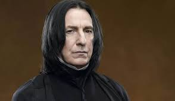
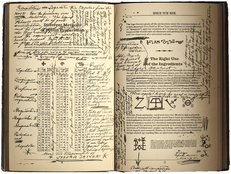

About Severus Snape
Severus Snape (9 January, 1960 – 2 May, 1998) was an English half-blood wizard serving as Potions Master (1981-1996), Defence Against the Dark Arts professor (1996-1997), and Headmaster (1997-1998) of the Hogwarts School of Witchcraft and Wizardry as well as a member of the Order of the Phoenix and a Death Eater. The only child of Muggle Tobias Snape and Gobstones witch Eileen Snape (née Prince), Severus was raised in the Muggle dwelling of Spinner's End, which was in close proximity to the home of the Evans family, though in a poorer area.
Severus Snape's Profile (age of picture unknown)
Major involvement and events
- Severus was made a member of the Slug Club presumably because of his talent in Potion-making. (during his years at Hogwarts)
- Snape diverts Professor Quirrell from gaining access to the Sorcerer's Stone.
- Snape (who was originally part of the death eaters) changed sides and became a member of the Order of the Phoenix as well as a double agent during the Second Wizarding War.
- Snape took part in the Battle of Hogwarts.
- After Snape's death, Harry Potter ensured that his portrait remained at Hogwarts, honouring him as a hero, despite their significant personal differences.
Severus Snape's History
Hogwarts years (1971-1978)
Severus attended Hogwarts School of Witchcraft and Wizardry as a student from 1971-1978 and was Sorted into Slytherin House, at that time led by Potions master Horace Slughorn. On the way to Hogwarts for his first year, Severus sat with Lily Evans on the train. While on the train they met James Potter and Sirius Black. This encounter between the three of them revolved around a disagreement regarding what Hogwarts house was the best. This hostile first encounter would set the tone for the antagonism between the three of them for the rest of his life.
Severus was a talented wizard even in his childhood. It was apparent through the notes and scribbles in his potions textbook that he made time during classes to invent curses, charms, and clever potion innovations, while simultaneously learning the required textbook lessons.